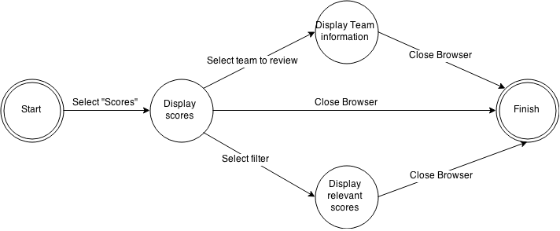
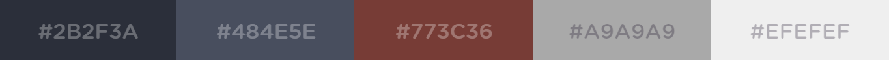

Hierarchical Task Analysis (HTA)

Colour scheme
The colour scheme is largely a monochromatic range of greys and a single maroon instance, with a large emphasis on warmness. The warmness of the colour scheme reduces the strain on the user's eyes which increases the overall experience. The monochromatic theme was selected due to the emphasizing ability it has, as evident on the score page with the grey (#A9A9A9) surrounding the content. The user's focus is naturally drawn to the centre, which is highlighted by the brighter colour (#EFEFEF) in the centre. The maroon colour (#773C36) is evident only on the main page to add some interest in the page. Only grey hues are used elsewhere, as it is expected that team logos will be vibrant and multi-coloured, and would likely cause unpleasant clashes if the colour scheme were to be similarly colourful.
Lines, borders and backgrounds scheme
The website is designed to maintain a sense of consistency throughout the pages and create physical groups that make sense to the user. The best example of this lies in the score pages, where the text is bordered by two large grey strips, and two black lines signalling the beginning and end of the content. This allows for the content to be easily visible to the user. Each score table has borders on both the top and bottom which indicates each individual score report for increased readability. The lines and borders are all sharp to clearly indicate the separate groups of content.
Font scheme
The fonts included in the design are Arial and Helvetica. Both were chosen due to their overall readability. Both fonts are simple and easy for the user to understand. The main point of difference with regards to content is the fact that bold fonts were reserved for headings, with font sizing indicated the importance of each heading. An example of this is on the main page, the news heading is the largest, with the title of the news article in a smaller, yet still emphasized state.
Assumptions and limitations
This prototype is extremely limited in its functionality, and only adheres to task stated in the HTA. When viewing scores in other divisions the screen dynamically changes to the other scores, however only two different score pages have been made, but is believed to indicate the functionality clearly. The user is able to click on the “Southampton Nifflers” team page to view information regarding that team, but at present is the only team with a team page. A large of links redirect directly back to the page, as their implementation is not expected at this stage. The scenario of the user is expected to be as follows;
View scores in "Adult Serious" division
View scores in the "Adult Legend" division
Investigate the Southampton Nifflers team
Resources used
Team logos sourced from the following ;
Southampton & Leeds - https://www.behance.net/gallery/20707807/Quidditch-Team-Logos
London - https://www.facebook.com/UnspeakablesLDN
Brighton Giants - http://alexhm0605.deviantart.com/art/Hogwarts-Vietnam-Giants-Quidditch-League-Logo-497241828
Thames Tyrants - https://ulife.utoronto.ca/organizations/view/id/2984
Manchester Manticores - https://www.usquidditch.org/team/moscow-manticores/
Blackpool Centaurs - http://en.wikipedia.org/wiki/Belgian_Quidditch_Federation
Ireland Dragons - http://dumbledoresarmyroleplay.wikia.com/wiki/File:Irish-National-Quidditch-Team.png
Other images
Main Logo - https://www.usquidditch.org/news
Image of Harry - https://www.universalorlando.com/harrypotter/
Code Snippets / Ideas
Menu Bar - http://www.nowstartwebdesign.com/2014/09/pure-css-horizontal-drop-down-menu-bar.html
HTML reference (Textbook) - http://www.htmlandcssbook.com/